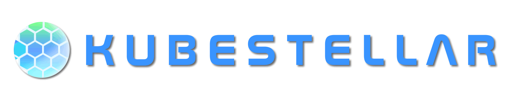
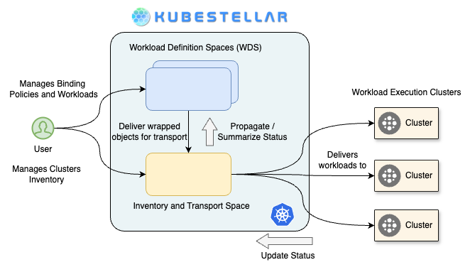

Overview

Multi-cluster Configuration Management for Edge, Multi-Cloud, and Hybrid Cloud#


KubeStellar is a Cloud Native Computing Foundation (CNCF) Sandbox project that simplifies the deployment and configuration of applications across multiple Kubernetes clusters. It provides a seamless experience akin to using a single cluster, and it integrates with the tools you're already familiar with, eliminating the need to modify existing resources.
KubeStellar is particularly beneficial if you're currently deploying in a single cluster and are looking to expand to multiple clusters, or if you're already using multiple clusters and are seeking a more streamlined developer experience.

The use of multiple clusters offers several advantages, including:
- Separation of environments (e.g., development, testing, staging)
- Isolation of groups, teams, or departments
- Compliance with enterprise security or data governance requirements
- Enhanced resiliency, including across different clouds
- Improved resource availability
- Access to heterogeneous resources
- Capability to run applications on the edge, including in disconnected environments
In a single-cluster setup, developers typically access the cluster and deploy Kubernetes objects directly. Without KubeStellar, multiple clusters are usually deployed and configured individually, which can be time-consuming and complex.
KubeStellar simplifies this process by allowing developers to define a binding policy between clusters and Kubernetes objects. It then uses your regular single-cluster tooling to deploy and configure each cluster based on these binding policies, making multi-cluster operations as straightforward as managing a single cluster. This approach enhances productivity and efficiency, making KubeStellar a valuable tool in a multi-cluster Kubernetes environment.
Subprojects and Additional Repositories#
KubeStellar is composed of several subprojects and additional repositories that work together to provide the complete multi-cluster management solution. The following is a comprehensive list of all codebases considered subprojects or additional repositories:
Active Subprojects#
| Repository | Purpose | Status | Location |
|---|---|---|---|
| kubeflex | A flexible and scalable platform for running Kubernetes control plane APIs. Provides the infrastructure for hosting multiple control planes. | Active | github.com/kubestellar/kubeflex |
| ocm-status-addon | Open Cluster Management addon that provides status synchronization between clusters. Builds container images and Helm charts for OCM integration. | Active | github.com/kubestellar/ocm-status-addon |
| galaxy | Additional modules, tools and documentation to facilitate KubeStellar integration with other community projects. Includes bash-based scripts for integration. | Active | github.com/kubestellar/galaxy |
| ui | KubeStellarUI application providing a web-based interface for managing multi-cluster deployments. | Active | github.com/kubestellar/ui |
| helm | Repository used solely for Helm charts distribution and management. | Active | github.com/kubestellar/helm |
Retired/Deprecated Subprojects#
| Repository | Purpose | Status | Location |
|---|---|---|---|
| ocm-transport-plugin | OCM Transport Controller for Open Cluster Management integration. | Retired | github.com/kubestellar/ocm-transport-plugin |
Note: The contents of ocm-transport-plugin have been merged into the main kubestellar repository. This repository is maintained for historical purposes and older releases only.
Repository Dependencies#
The following diagram shows the dependency relationships between repositories:
flowchart LR
kubestellar --> kubeflex
kubestellar --> ocm-status-addon
kubestellar --> galaxy
kubestellar --> ui
ocm-status-addon --> kubestellar
galaxy --> kubestellar
ui --> kubestellarSecurity and Maintenance#
All subprojects follow the same security practices and maintenance procedures as the main KubeStellar project:
- Code Reviews: All changes require peer review before merging
- Security Scanning: Regular security scans and vulnerability assessments
- Dependency Management: Automated dependency updates and security patches
- Release Process: Coordinated releases with the main KubeStellar project
- Documentation: Each subproject maintains its own documentation and follows the main project's documentation standards
For detailed information about each subproject's specific functionality, architecture, and usage, please refer to their respective repositories and the Packaging and Delivery documentation.
Getting Started#
See the Getting Started setup guide for getting started with kicking the tires.
Contributing#
We ❤️ our contributors! If you're interested in helping us out, please head over to our Contributing guide.
Getting in touch#
There are several ways to communicate with us:
Instantly get access to our documents and meeting invites http://kubestellar.io/joinus
- The
#kubestellar-devchannel in the CNCF Slack workspace - Our mailing lists:
- kubestellar-dev for development discussions
- kubestellar-users for discussions among users and potential users
- Subscribe to the community calendar for community meetings and events
- The kubestellar-dev mailing list is subscribed to this calendar
- See recordings of past KubeStellar community meetings on YouTube
- See upcoming and past community meeting agendas and notes
- Browse the shared Google Drive to share design docs, notes, etc.
- Members of the kubestellar-dev mailing list can view this drive
- Read our documentation
- Follow us on:
- LinkedIn - #kubestellar
- Medium - kubestellar.medium.com
Release Notes#
For detailed, summaries of each release—including new features, bug fixes, and breaking changes—please visit our release notes page:
https://docs.kubestellar.io/unreleased-development/direct/release-notes/
❤️ Contributors#
Thanks go to these wonderful people: